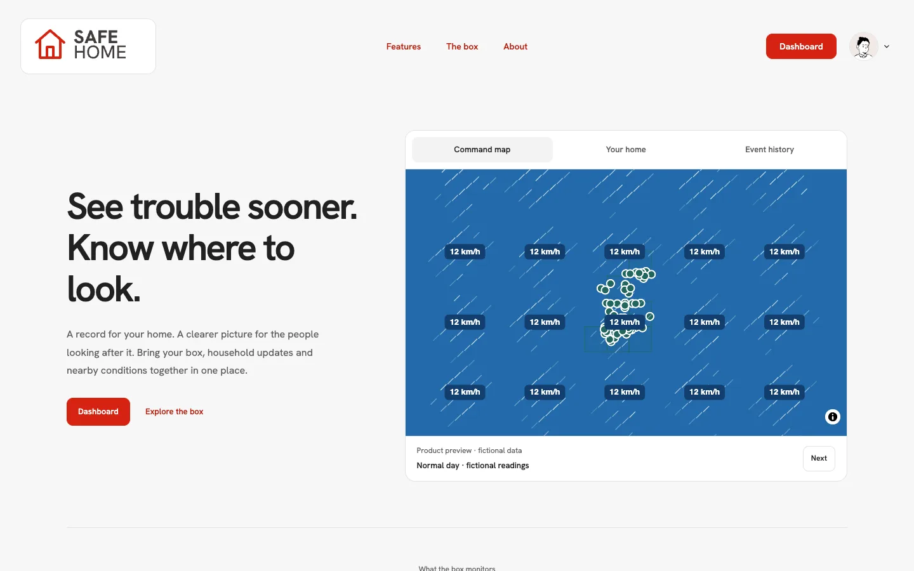

Safe Home
The public site, a simulation builder and the operator and household screens for a home sensor system built at HackUTD 2026.
Design and front end on a team of four, November 2026. Plain JavaScript and CSS, MapLibre, three.js and Cloudflare Pages.

What it is
Safe Home brings readings from sensor boxes in homes and nearby disaster alerts into one place, so response teams can prioritise survivors who have lost power or Wi-Fi. An AI assistant helps operators coordinate with first responders. This page covers the web interface. The boxes and the radio mesh between them are on the project page.
It was built at HackUTD 2026, where it was my first hackathon. The team won two awards, including 3rd place in the State Farm track. It is a prototype, not a certified alarm or an emergency dispatch service, and the code is in a private repository.
What the site contains
- Home pageA product page with a preview of the map that runs on fictional readings.
- Operator workspaceBehind a sign-in. A street map with device points and public data layers, a review queue, and a page for each device with its sensors, logs and messages.
- Household viewBehind a sign-in. One household’s box in plain wording, with a 3D viewer of the enclosure.
- SimulationsA five-step builder (place, event, devices, normal readings, review) followed by playback of fictional device reports. safehomemesh.us/simulations
- Build your own boxA guide and form for registering a self-built box. safehomemesh.us/build
- Component kitEvery interface component in every state, in two themes. safehomemesh.us/kit
How it is built
There is no front-end framework. The pages are plain JavaScript and CSS bundled with esbuild. The map uses MapLibre GL with OpenFreeMap street tiles and overlays from public sources, including National Weather Service alerts, FEMA flood zones and shelters, USGS river gauges and earthquakes, and NASA fire detections. The operator view polls the API about every four seconds and the household view about every ten.
A report that has not arrived is shown as unknown, never as normal. The interface is built on a vendored copy of the Argus UI component library. Browser tests run in Playwright, with axe-core accessibility checks. GitHub Actions deploys each pull request preview and the main branch to Cloudflare Pages, with Pages Functions and MongoDB Atlas behind them.
What I did
- Worked on the design, the account and household screens, the operator workspace, the infrastructure integration and the release checks.
- Wrote 56 of the 92 commits that touch the front-end folders.